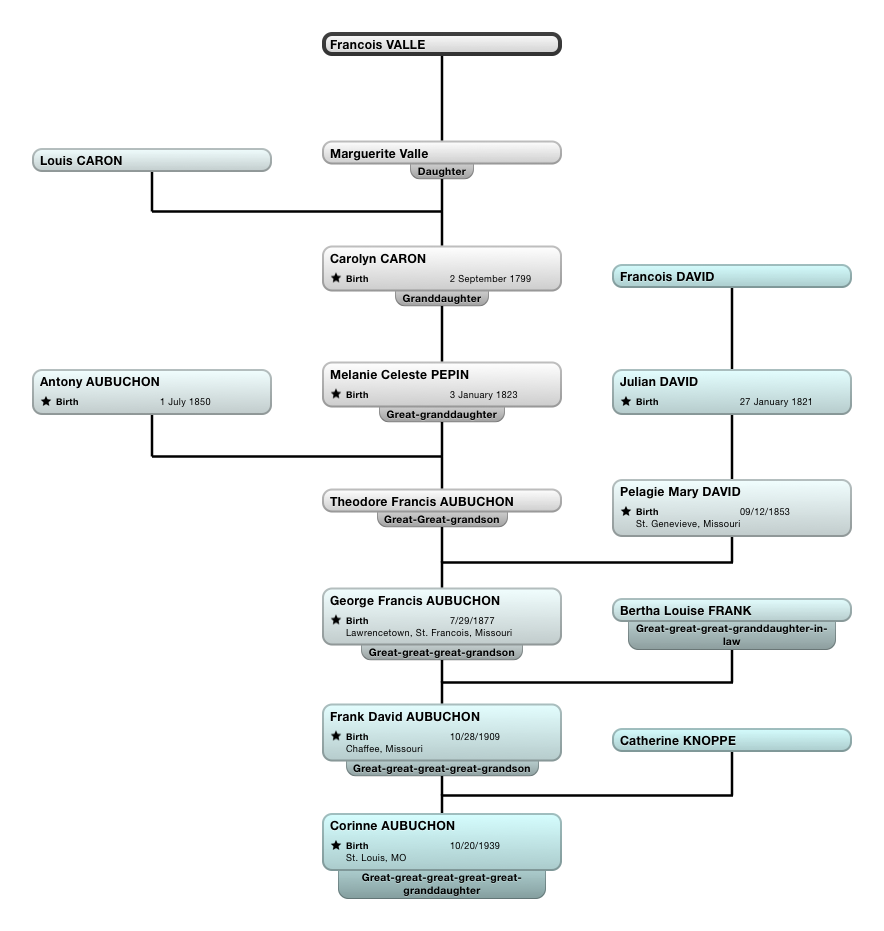

Are We Part-Injun, or What?
There's a certain cachet in being part-Native American. Because of this, I've heard that an unrealistic number of Americans claim Native American ancestry. Yet it's hard to find a reliable source that documents this. The most reasonable article I've been able to find thus far is here: Slate article by Brian Palmer. According to this article, 1.7% of the population self-identified as completely or partially Native American in the 2010 Census.
One-point-seven percent is not much, but I suspect that there a lot more out there who claim to have some "Indian blood" without actually identifying as Native American. Into that group fall the AuBuchon family. For many years now I've heard family rumors that we were part Indian. And, considering that our French ancestors landed here in the 1600's, the possibility seems not only plausible but, indeed, inevitable: how could those trappers have avoided intimate contact with the indigenous people?
Still, saying's one thing, proving's another. On this page I hope to document what evidence we have for this claim. Hopefully the page will also give a sense of the process of doing genealogical research, how it is endlessly frustrating, yet rewarding when, after much effort, something that is probably close to the truth emerges.
Our Indian Roots, Version One
The first account of our Indian ancestry that I remember ever hearing goes something like this. My grandmother, Catherine AuBuchon, née Knoppe, once told the story of having a conversation with her husband's paternal grandmother. In this conversation, the elderly woman remembered aloud her youth spent on and Indian reservation in Oklahoma.
Here's a snippet of the family tree showing the major players in this story.

As you can see, the woman my grandmother spoke to was Pelagie Mary David. The family tree has her birthplace as St. Genevieve, Missouri. If her birthplace is correct, then the story is probably mistaken is some way. Ascertaining her birthplace and childhood would be the direction to go if we were to folllow this lead.
Version Two, Having Much More Detail
The second account of our Indian ancestry comes from a recent email (dated January 2015) from my Aunt Virginia.
Our Indian ancestor was right here in Missouri. When François Valle was Govenor of the Louisiana Territory, living in Ste. Genevieve, Missouri, he fathered a daughter by an Indian woman and raised the girl, Marguerite, as a daughter of the family. She was given dowry, and when she was a young teenager he gave her a very large parcel of land, being afraid that when he died, her half siblings would not honor his wishes of what he wanted her to inherit. He chose a husband for her--Louis Caron, who was part French, part Spanish and maybe part Indian. They had a daughter, Pelagie, who married Louis Aubuchon. Louis and Pelagie had a son, Antoine, who I believe carried on the name until a couple of more generations when a George Aubuchon married a Bertha Franke, who were my grandparents and grandparents of your mom, Corinne.
At the end of the email, Aunt Ginny makes it clear she's remembering all this off the top of her head. She promises to write again with more information. This probably explains why the names and relations she gives don't exactly match what is in the family tree. My copy of the tree, a large, rolled-up piece of paper whose connecting lines have not entirely withstood the test of time, has the following for this connection going back to Marguerite Valle and her father.
So, following this lead, the focus of our investigation should be François Valle and his daughter, Marguerite. A quick internet search has produced the following interesting leads.
Mike Barteit on François Valle
Descendents of Marguerite Valle
Webpage identifying Marguerite as half-Indian and illegitimate
And, finally, here's a source that cites another source. This is the best lead so far, and worth quoting. But note that Marguerite is mentioned simply as "illegitimate," not Indian.
VALLE, François, I, habitant, merchant, political leader in Upper Louisiana. Born, Beauport, Quebec, January 2, 1716; son of Charles La Vallée and Geneviève Marcou. Removed to Illinois country. Married, Kaskaskia, January 7, 1748, Marianne Billeron, daughter of Léonard Billeron, royal notary, and Maire-Claire Catoise. Children: Marie-Louise (b. ca. 1750), Charles (b. ca. 1752), Joseph (b. ca. 1756), François II (q.v.), Jean-Baptiste (q.v.), Marguerite (illegitimate). Removed to Ste. Geneviève, ca. 1754; captain of the militia and civil judge at Ste. Geneviève, ca. 1759-1783; one of wealthiest and most powerful men in Upper Louisiana. Died, September 29, 1783; interred Ste. Geneviève. C.J.E. Sources: Mary L. Dalton, "Notes on the Geneology of the Vallé Family," Missouri Historical Society Collections, II (1906); Carl J. Ekberg, Colonial Ste. Geneviève (1957).
Louisiana Historical Association page
The next step would be to get our hands on one or both of the books cited above, and see if either contains any additional information on Marguerite.
Some Corroborating Evidence
My Aunt Virginia also forwarded me an email from her grandson, Dan--my second cousin, I suppose. In that email, Dan says:
So we received grandma's full ancestry report today and it confirms she is 0.4% Native American. That is precisely how much we would expect based on the number of generations ago the genealogy says. They don't have any additional info on what tribe at this time, but they might add that ability in the future.
About 99% of grandma's DNA is Northern European. Mainly French and German but also Scandinavian and British Isles. Not really any Eastern European, but the big surprise to me was the 0.5% Sardinian. This would mean there is a relative from roughly 6 generations prior was 100% Sardinian. I don't see anything in the genealogy with this so we have a bit of a mystery to investigate!
(I assume that the "grandma" mentioned above is my Aunt Ginny.) I don't know much at all about DNA, and apart from the contents of the email quoted above I know nothing about how Ginny's ancestry was tested. But I'm pretty sure that the process is a little iffy, and the results not entirely reliable. To quote the Slate article cited above:
But it’s impossible to come up with a meaningful rate of Native American heritage using DNA tests, at least for the moment. Using genetic material from the mitochondria (which is passed from mother to child) and from the Y-chromosome (passed from father to son), it's possible to trace ancestral origins along the male and female lines that run down each side of a person's family tree—his mother's mother's mother, his father's father's father, and so on. But progenitors anywhere in the middle, which constitute the overwhelming majority of a person's ancestry, are harder to trace, especially as the tree broadens. Geneticists are constantly improving their odds by identifying more telltale sequences that might survive the reshuffling across multiple generations, but the science is still young.
If I read this right, the DNA test Aunt Ginny had falls into the "harder to trace" category, because the line going back to Marguerite Valle's American Indian mother follows neither an all-male nor an all-female route.
Also, if I count the generations right, the percentage of Native American DNA in Ginny (as well as my own mom), would be about 0.75%, which is pretty close to 0.4%. (Follow the tree above to check my math, which goes: Marguerite was 50% American Indian; her son François, 25%; his son Julian, 12.5%; his daughter Pelagie, 6.25%; her son George, 3.1 %; my grandfather Frank, 1.5%; and his daughters Virginia and Corinne, 0.75%.
As I said above, though, I am familiar with little about all this, and maybe my calculations have nothing to do with the number 0.4% which Dan reports.
The Goal
Right now there's very little to go on, but with enough information we might actually be able to produce a piece of paper that will win for ourselves and our children the endless riches in scholarships, equal-opportunity employment and outright government grants that Native Americans currently enjoy. Those lucky dogs!
If the family lore is true, then maybe one day we'll be able to, literally, document our heritage. A starting point in that quest may be one of the links pointed to by the following web page: Native American Genealogy. (Note that, in the four categories described at the top of the article, we would fall into the fourth.